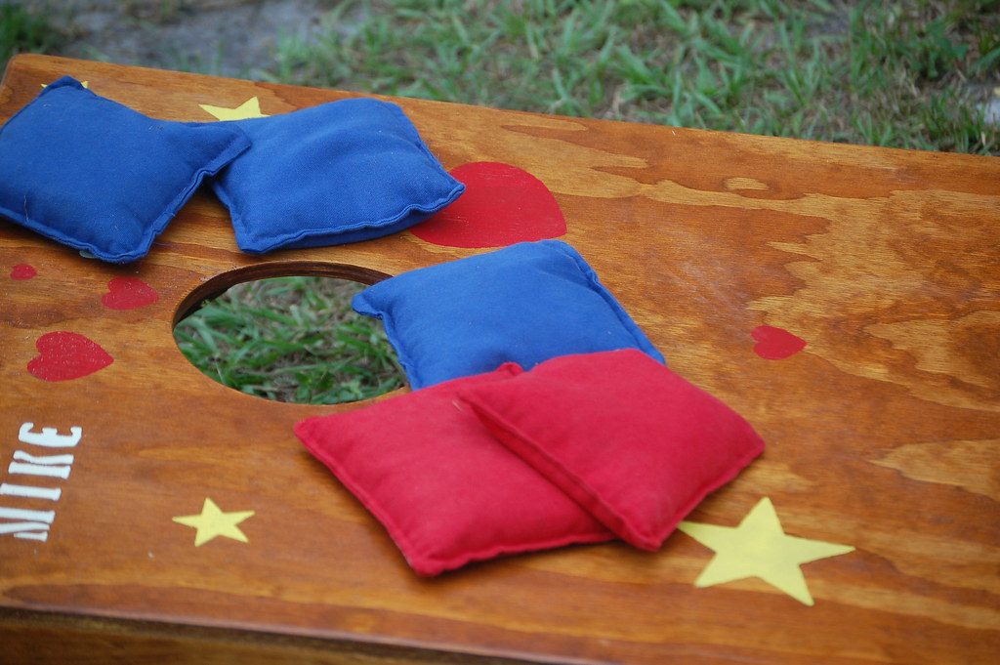

How to Play Bean-bag Tossing Games with Friends and Family
By: Dan
Introduction
Bean-bag tossing games are a popular outdoor activity that can be enjoyed with friends and family. Whether you're looking to entertain guests at a barbecue or picnic or simply want to spend some quality time with loved ones, bean-bag tossing games are a great way to do it. In this article, we will provide you with all the tips and tricks you need to know to have a successful bean-bag tossing game.
When it comes to bean-bag tossing games, there are different variations to choose from, including cornhole, ladder toss, and washer toss. Each game has its own set of rules and strategies, making it important to learn the basics before diving in. In this article, you will learn the rules for each game, as well as tips for improving your accuracy and winning strategy.
Bean-bag tossing games are also an excellent way to incorporate physical activity and competition into your social gatherings. Research has shown that engaging in physical activity with others can improve mental health and social bonding. So not only will you have fun, but you will also be promoting a healthy lifestyle and strengthening relationships with those closest to you.
In the following sections, we will dive into the specifics of each bean-bag tossing game and provide you with all the information you need to get started. So get your beanbags ready, gather your friends and family, and let's get tossing!
ad space
Equipment
Essential equipment required for Bean-bag Tossing Games
Planning a fun-filled outdoor gathering with friends and family? Want to add some excitement to your evening and also up your game? Look no further, as Bean-bag Tossing Games is just what you need!
Bean-bag Tossing Games have become extremely popular over the years, and it shows no sign of slowing down any time soon. Whether you are playing for fun or competition, it's a thrilling activity for people of all ages. In this article, we will go through the equipment required to ensure you're fully equipped and ready to play.
Firstly, you'll need a set of bean-bags. You can either make your bags or purchase them from your nearest sports store. When selecting your bags, keep in mind the weight and size - regulation size bean-bags weigh approximately 1 pound and are 6 inches by 6 inches. However, if you're making your bags, you can adjust the size and weight as per your preference.
Secondly, you will require a set of cornhole boards. Cornhole boards come in various shapes, colors, and sizes, so choose the one that suits your needs best. Regulation size cornhole boards are usually 2 feet wide and 4 feet long. They also come with a hole that's 6 inches in diameter, about 9 inches from the top of the board.
Once you have chosen your boards, you will need to purchase a set of bean-bag tossing bags. Make sure you buy bags that correspond to the board's required size, which is usually 6 inches by 6 inches.
It's important to note a few things before you set up your game. Ensure that the boards are approximately 30 feet apart, and the surface is clear of any clutter or debris. Keep in mind that Bean-bag Tossing Games are usually played outside on grass, but it can also be played indoors.
With these essential pieces of equipment, you're all set to play Bean-bag Tossing Games with friends and family. It's a fun sport that employs strategy, skill, and a lot of luck. So, grab your bean-bags and let the games begin!
ad space
Rules
for Successful Bean-bag Tossing
When it comes to backyard games, bean-bag tossing is a classic choice that never gets old. Not only is it easy to set up, but it's also a great way to spend time with family and friends. That being said, whether you're playing for fun or you're a serious competitor, it's important to know the rules of the game.
The basic premise of bean-bag tossing is simple: there are two boards with a hole in them set up a certain distance apart. Players take turns tossing bean-bags, trying to score points by getting the bags in the hole or landing them on the board. However, there are some finer points to the game that make it more challenging, and ultimately more fun.
One of the most important rules to follow when playing bean-bag tossing is that you must stay within a certain distance of the boards when throwing. This distance can vary depending on the skill level of the players and the size of the playing area, but in general, it should be between 15 and 25 feet.
Another rule to keep in mind is that there are different point values for different types of throws. For example, if you land the bag in the hole, that's worth three points, while getting it on the board is only worth one. There are also penalties for certain types of fouls, such as tossing out of turn or stepping over the throwing line.
Finally, remember that good sportsmanship is key in any game. Be respectful of your opponents, keep good track of the score, and don't get too caught up in winning or losing. Playing bean-bag tossing is all about having fun and making memories with your loved ones, so don't lose sight of that.
With these rules in mind, you're well on your way to becoming a bean-bag tossing pro. So grab your bags and your boards, head outside, and get ready for some friendly competition!
ad space
Strategy
to Improve Your Bean-bag Tossing Skills and Win Every Game
Are you tired of losing every bean-bag tossing game to your friends and family? Do you want to become the life of the party by dominating the game? Then, you need to learn some strategies that will help you improve your bean-bag tossing skills and win every game.
Firstly, it is essential to master your throwing technique. While holding the bean bag, stand with one foot slightly in front of the other, and make sure that your throwing arm is straightened. Next, shift your body weight towards your front foot, but ensure that your rear foot remains grounded. Then, swing your arm forward and release the bean bag at the highest point of the swing. Practice this technique repeatedly to master it.
Another critical aspect of improving your bean-bag tossing skills is to study the playing field. You must understand how various factors such as wind, humidity, and terrain affect the game. By analyzing the playing field, you can adjust your throwing technique accordingly and increase your chances of winning.
Collaboration and communication with your partner is also crucial to winning the game. You need to establish a clear signal to your partner that indicates when to throw and when to hold back. This signal should be easy to see and understand, so practice it before the game to avoid confusion.
In conclusion, by incorporating these strategies into your game, you can dramatically improve your bean-bag tossing skills and increase your chances of winning. Remember to practice your throwing technique, study the playing field, and communicate effectively with your partner. With these tips, you will become a bean-bag tossing pro in no time!
ad space
Variations
Get Creative with These Exciting Bean-Bag Toss Variations!
Bean-bag tossing games are a timeless classic enjoyed by family members and friends of all ages. However, over time, the same old bean-bag toss can become routine and lose its excitement. That's why we've compiled a list of exciting bean-bag toss variations to help you spice up your game and add a new element of fun to your next gathering.
One game variation that's sure to get everyone's blood pumping is called "Around the World." Instead of tossing the bags onto a regular target, players must aim for different targets in a specific order, which ensures they go around the world. You can buy a pre-made, themed variation, or get creative with your own custom version that fits your interests.
Another unique variation is called "Bean-Bag Ladder." In this game, players start with the bean-bag toss board placed right in front of them. As they continue to hit the board, they must take one step backward after each successful hit. The game ends when players can no longer hit the board from where they're standing. This variation adds a fun physical element to the game.
If you're looking for a more challenging version, try "Speed Toss." In this game, players must toss as many bean bags as possible into the target in a limited amount of time. With each successful toss, they receive an additional point, which encourages speed and accuracy.
Finally, for those who want to make things truly interesting, there's the "Glow-in-the-Dark Bean Bag Toss." This variation features a board with light-up target holes and glowing bean bags. It's a perfect game for outdoor nighttime gatherings.
No matter what variation you choose, bean-bag toss is a fun activity for everyone. So, gather some friends and family and try one of these creative variations to add some spice to your next game night.
ad space
Conclusion
After hours of laughter, friendly competition, and the satisfying thuds of bean bags hitting their targets, there is nothing quite like the feeling of wrapping up a bean-bag tossing game with friends and family. Whether you're a seasoned player or just starting out, these classic games are perfect for gathering together and enjoying some outdoor fun.
Throughout this website, we've explored various bean-bag tossing games, from the traditional cornhole to the newcomer Kan Jam. We've learned about different techniques for throwing and scoring, and even discovered some DIY options for those who want to create their own boards.
But now, as the sun sets and the games wind down, it's time to reflect on the joy that bean-bag tossing brings. These games have a way of bringing people together, creating memories, and strengthening bonds. They're an easy and affordable way to entertain and have fun with friends, without the need for expensive equipment or special skills.
So as we conclude our journey through the world of bean-bag tossing, we encourage you to gather up your loved ones and head outside for some friendly competition. And who knows, maybe you'll even create your own traditions and memories that will last a lifetime.
In conclusion, whether you prefer the classic cornhole or want to try out something new like Kan Jam or Giant Jenga, the most important thing is to have fun and enjoy the company of those around you. So grab your bean bags, set up the boards, and let the games begin!
ad space